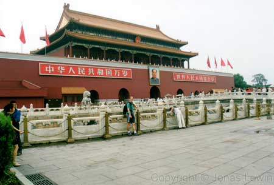
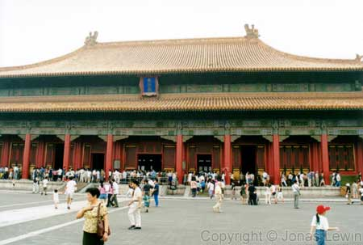

China, Beijing, Forbidden City, 2001-08
|
Located at the far end of Thiamin Square, you find The Forbidden City.
Luckily it's not forbidden for us tourists to visit now days. As I was
here a few years earlier, I'm writing some other comments about this city
now. This is part of the old wall surrounding the Forbidden City.  Looking at The Forbidden City from the entrance, doesn't look that
spectacular. Walking thru many walls, with important buildings on them, seems to be
more of a rule, than an exceptoion here. Is this The Forbidden City?
Everything is just built on these big red walls? If you think that my "tour" of the city is a bit boring, you should go
here yourself, and rent the audio tour. It's Roger Moore giving you a tour
via your rented freestyle. I would recommend it, if you choose to go here
without a guided tour (as I had last time). The buildings are generally very large here. Compare to the humans walking over by this building.
As a member of today's society, I ask my self: Was it really worth it to
create this stone for the Emperor to be carried over? He never walked here
on foot any way.
 Every year, the Emperor would add another layer of gold to these very
large pots. And they where plenty too.
|